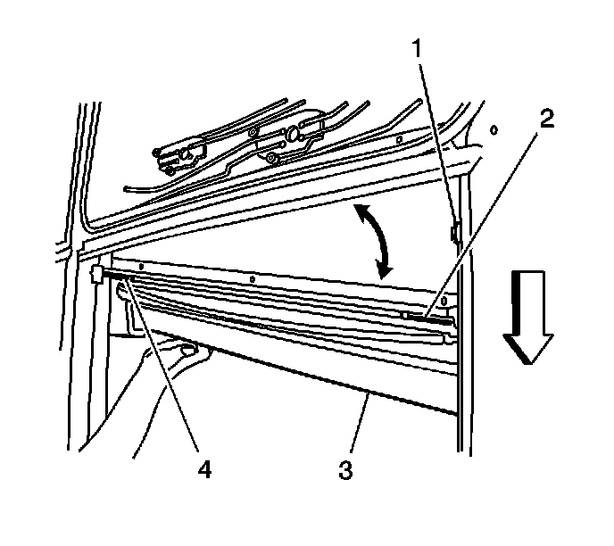
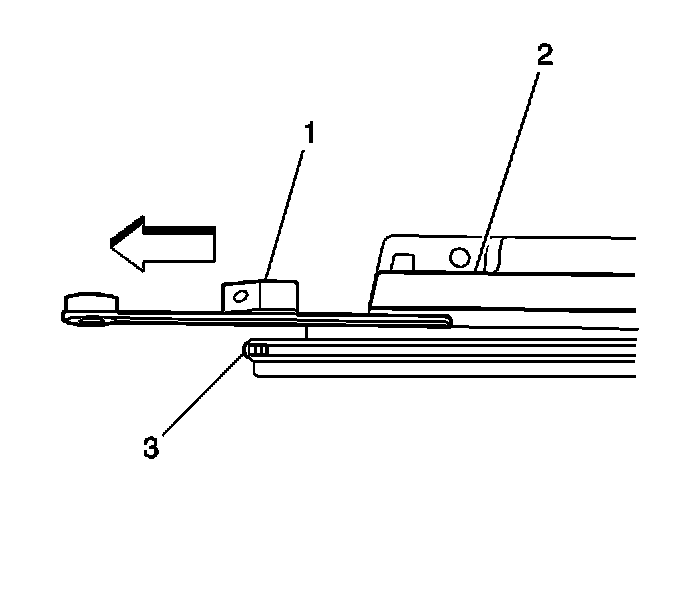
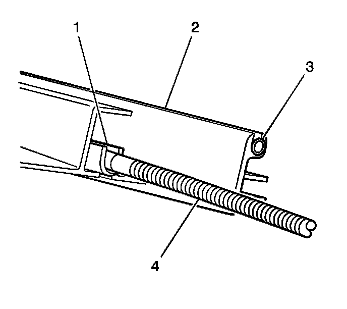
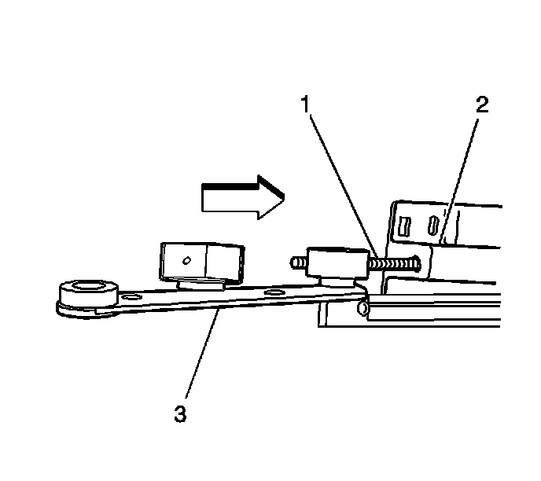
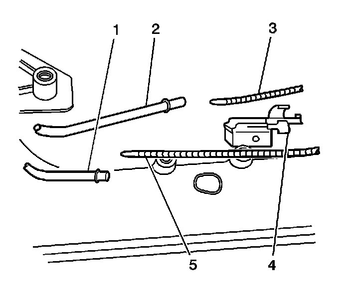
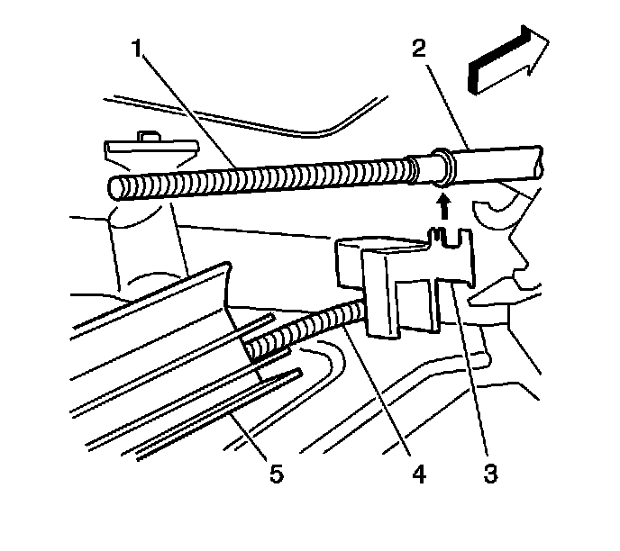

Sunroof Window Cable Assembly Replacement (Front)
Sunroof Window Cable Assembly Replacement (Front)
Removal Procedure

1. Remove the center window panel (2). Refer to Sunroof Window Replacement (Front) (Service and Repair)Sunroof Window Replacement (Rear Vent) (Service and Repair)Sunroof Window Replacement (Center) (Service and Repair)Sunroof Window Replacement (Rear Stationary) (Service and Repair) .
2. Open the front sunroof window approximately 350 mm (14 in) just past the front air deflector.
3. Remove the front sunroof window. Refer to Sunroof Window Replacement (Front) (Service and Repair)Sunroof Window Replacement (Rear Vent) (Service and Repair)Sunroof Window Replacement (Center) (Service and Repair)Sunroof Window Replacement (Rear Stationary) (Service and Repair) .
4. It is only necessary to lower the headliner. Only do those step in headliner replacement that will lower the headliner enough to gain access to the part. Refer to Headlining Trim Panel Replacement (Service and Repair) .

5. Remove the front sunshade assembly (3). Refer to Sunroof Sunshade Assembly Replacement (Rear) (Sunroof Sunshade Assembly Replacement (Rear))Sunroof Sunshade Assembly Replacement (Front) (Sunroof Sunshade Assembly Replacement (Front)) .
6. Remove the sunroof front track extension. Refer to Sunroof Front Track Extension Replacement (Sunroof Front Track Extension Replacement) .
7. Remove the remainder of the front track screws.

8. Disengage the front track rear extension (2) from the sunshade and window drive tubes (4).
9. Lower the track into the passenger compartment.

10. Carefully pull the sunroof window cable assembly (1) from the front track (2).
11. Remove the cable assembly.
Installation Procedure

1. Position the bullet end of the cable (4) into the front window track (2).
2. Carefully push the cable assembly (4) into the track channel (1) until the bullet end of the cable reaches past the back side of the track.

3. Pull the cable until the drive guide link (3) reaches the front edge of the track.
4. Position the track to the bottom of the sunroof frame.

5. Position the bullet end of the window cable (5) into the drive tube (1).
6. Push the cable until the track reaches the drive tubes.

7. Install the drive tube retainer (3).
8. Position the track to the bottom of the sunroof frame.
9. Loosely install the track screws
10. Measure the tracks side-to-side to ensure that both tracks are parallel.
Notice: Refer to Fastener Notice (Fastener Notice) .
11. Secure the track to drive tube retainers.
Tighten the screws to 5 N.m (44 lb in).
12. Install the front sunshade assembly (3). Refer to Sunroof Sunshade Assembly Replacement (Rear) (Sunroof Sunshade Assembly Replacement (Rear))Sunroof Sunshade Assembly Replacement (Front) (Sunroof Sunshade Assembly Replacement (Front)) .
13. Install the headliner. Refer to Headlining Trim Panel Replacement (Service and Repair) .
14. Install the front sunroof window. Refer to Sunroof Window Replacement (Front) (Service and Repair)Sunroof Window Replacement (Rear Vent) (Service and Repair)Sunroof Window Replacement (Center) (Service and Repair)Sunroof Window Replacement (Rear Stationary) (Service and Repair) .
15. Install the center window panel (2). Refer to Sunroof Window Replacement (Front) (Service and Repair)Sunroof Window Replacement (Rear Vent) (Service and Repair)Sunroof Window Replacement (Center) (Service and Repair)Sunroof Window Replacement (Rear Stationary) (Service and Repair) .
16. Perform the sunroof front window/sunshade initialization procedure. Refer to Sunroof Front Window/Sunshade Initialization Process (Sunroof Front Window/Sunshade Initialization Process) .